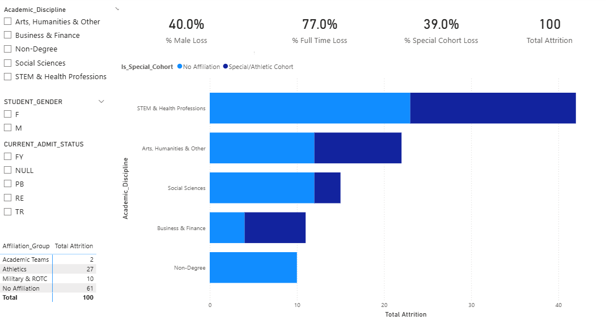

SQL_ATTRITION = """
SELECT
s.student_id,
s.first_name || ' ' || s.last_name AS full_name,
s.state_residence,
s.athlete_flag,
e_fall.credits_enrolled
FROM Students s
JOIN Enrollments e_fall
ON s.student_id = e_fall.student_id
AND e_fall.term = 'Fall 2025'
AND e_fall.registered_flag = 'Y'
LEFT JOIN Enrollments e_spring
ON s.student_id = e_spring.student_id
AND e_spring.term = 'Spring 2026'
AND e_spring.registered_flag = 'Y'
WHERE s.entry_term = 'Fall 2025'
AND e_spring.student_id IS NULL;
"""Higher Education Portfolio Activity
Running Code Locally
If you are interested in running code locally, you can do so by following these steps:
- You can run
git clone git@github.com:CreativeEntelechy/database_demo.git- Alternatively, feel free to download raw from source if you don’t have Git installed.
- You will need to download either
MinicondaorAnacondato work with my package manager. - We don’t commit data to Git, so you’ll need to download the data I used.
- Download my data and drop the entire folder in the root of this project directory:
Part 1: Data Visualization & Communication
Data Cleaning and Feature Engineering
This section documents the data preparation and feature engineering for the Fall to Spring student retention loss dataset.
Key transformations:
- All null values normalized to ‘NA’ for consistency
- Academic programs categorized into five disciplines:
- STEM & Health Professions
- Business & Finance
- Social Sciences
- Non-Degree
- Arts, Humanities & Other
- Student cohort flagged based on athletic/special status to identify time-demand factors
Interactive Dashboard for Exploratory Data Analysis
The first step in my exploration was to take a look at the data itself. A good starting point might be to use PivotTables and play around with different columns in Excel; however, I wanted to create an interactive dashboard in PowerBI to help with this process. Below is an example of an interactive dashboard that leadership can use to filter through multiple characteristics and perform quick EDA.

Attrition Concentration by Academic Discipline
Why I chose this visualization: When I performed EDA, I noticed that many STEM professions, such as nursing, were largely represented in this dataset. I wanted to explore this relationship a bit more robustly, so I broke down different majors into logical buckets. I also noticed that special populations were also vastly represented in this dataset, so I wanted to represent them as well. For these reasons, I decided to use a stacked bar chart as I could represent each of the classes and use a legend to represent special populations.
Key takeaways for leadership: The visualization reveals that STEM & Health Professions students represent the largest proportion of fall-to-spring attrition, particularly among those in special athletic cohorts. This concentration suggests that program-level factors (lab-heavy curricula, clinical requirements) combined with time demands of athletic participation may contribute significantly to non-persistence.

Part 2: Student Success and IPEDS
Defining student success: As a previous academic support director, there are multiple ways to define student success. We want to look closely at retention metrics and closely examine stops. If a student did not return for a semester – what were the reasons? Was it related to SAP? Financial Aid? Transfer?
From the perspective of IPEDS we can also look at first year retention as a leading indicator and 150-200% completion as a lagging indicator. An important part of this process is to compare ourselves with peer institutions that are similar in size, student demographics, and other comparable attributes. If we are involved with consortiums, then we can also share data and build more precise benchmarks. Included below is a sample Tableau dashboard that includes leading/lagging indicators for retention and completion.
Sample IPEDS data: To illustrate my point, I pulled data from 2022 IPEDS, mainly focusing on core student success metrics.
The cleaned IPEDS dataset integrates outcome measures from five surveys covering 8-year completion rates, first-year retention, transfer outcomes, and institutional characteristics by state and sector. The interactive visualization below explores the relationship between first-year retention rates and 8-year graduation outcomes:

Part 3: Critical Thinking: Data Quality & Interpretation
The Necessary Quality Check
How would you analyze these results before sharing them with the requester: The clear issue in this table is that not all states are represented. The sum of each of the states does not equal the total count. Likely the State column was calculated from an address column retrieved from the datalake (e.g. Banner, Salesforce). If your formula is not correct, you can have unintended consequences. Below is an example of the most probably culprit.
The Problem with Simple Regex
A simple regex match for state abbreviations can be misleading when addresses are not normalized. Many address fields lack explicit state codes, requiring fragile pattern matching:
# Naive regex approach - prone to failure:
import re
pattern = r'\b([A-Z]{2})\b' # Matches any 2-letter sequence
match = re.search(pattern, address_string)
state_abbr = match.group(1) if match else NoneThis approach fails when: * Addresses lack state abbreviations entirely * Company names or street names contain letter pairs matching state codes * Data is inconsistently formatted
Better Approach: ZIP Code to State Mapping
A safer option is to use the ZIP code to infer the state, with a majority-state rule for ambiguous ZIPs (e.g., Fort Campbell spans KY/TN). This provides ground truth from geographic data rather than pattern matching. However, some zip codes may span multiple states. Should we need precise counts for states (and be intolerable to neighboring mismatches), then we would need to use a geocoder (e.g. ArcGis/Google) to map the students’ addresses to states. Since student addresses are directory information, this should be a reasonable step if high fidelity is required.
Sample Audit Results
The following table illustrates the sample geocoding audit output, showing addresses with their extracted ZIP codes and inferred states:
| Student_ID | Full_Address | ZIP_Code | Recorded_State | Regex_Match (State) | ZIP_Effective | State_From_ZIP |
|---|---|---|---|---|---|---|
| 1001 | 123 Maple St, Indianapolis, IN 46204 | 46204 | Indiana | IN | 46204 | IN |
| 1002 | 456 Oak Ave, Chicago, Illinois 60605 | 60605 | Illinois | NaN | 60605 | IL |
| 1003 | 789 Pine Rd, 42223 | 42223 | NA | NaN | 42223 | KY |
| 1004 | 101 Bluebird Ln, Fort Campbell, 42223 | 42223 | NA | NaN | 42223 | KY |
Key Observations: - Records 1001 and 1002 are cleanly matched via ZIP code - Records 1003 and 1004 demonstrate ambiguous ZIP handling: Fort Campbell (a military installation) spans KY/TN boundaries, but the majority-state rule assigns it to KY
Part 4: Programming & Data Retrieval
Database Schema
To make this a more realistic activity I simulated some fake data. Then I ingest them into a SQLite database, so I can query them like any Postgres/Oracle database.
The SQLite database is structured with three tables enforcing relational integrity:
- Students:
student_id(PRIMARY KEY), with CHECK constraint onathlete_flag(IN (‘Y’, ‘N’)) - Enrollments:
enrollment_id(PRIMARY KEY), FOREIGN KEY to Students, with CHECK constraint onregistered_flag - Degrees:
degree_id(PRIMARY KEY), FOREIGN KEY to Students
Attrition Query
The following SQL query identifies students who entered in Fall 2025, were enrolled in Fall 2025, but did not register for Spring 2026:
Query Results
import pandas as pd
import sqlite3
conn = sqlite3.connect("outputs/institutional_records.db")
attrition = pd.read_sql_query(SQL_ATTRITION, conn)
conn.close()
attrition| student_id | full_name | state_residence | athlete_flag | credits_enrolled | |
|---|---|---|---|---|---|
| 0 | STU031 | Paul Walker | IN | N | 15 |
| 1 | STU035 | Joshua Wright | NY | N | 15 |
| 2 | STU038 | Rebecca Nguyen | FL | Y | 18 |
| 3 | STU041 | Brian Green | IL | N | 16 |
| 4 | STU045 | Edward Hall | IN | N | 13 |
| 5 | STU049 | Timothy Carter | IN | N | 16 |
| 6 | STU052 | Angela Phillips | OH | N | 14 |
| 7 | STU055 | Ryan Diaz | CA | N | 15 |
| 8 | STU059 | Gary Collins | IL | N | 15 |
| 9 | STU063 | Eric Morales | IN | Y | 15 |
| 10 | STU067 | Jonathan Gutierrez | IN | N | 12 |
| 11 | STU071 | Justin Cooper | NY | N | 16 |
| 12 | STU075 | Brandon Kelly | TX | N | 15 |
| 13 | STU079 | Samuel Cox | OH | N | 12 |
| 14 | STU083 | Alexander Brooks | FL | Y | 13 |
| 15 | STU087 | Frank Bennett | MI | N | 15 |
| 16 | STU091 | Jack Hughes | CA | N | 12 |
| 17 | STU095 | Jerry Sanders | IL | N | 13 |
| 18 | STU099 | Aaron Ross | IN | N | 15 |